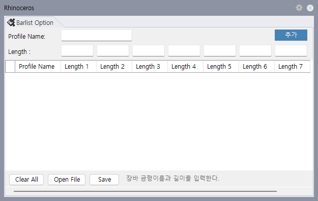

UBarList UserBarList
사용할 장바(Profile Bar) 길이 목록을 입력하고 파일로 저장/불러오기 위한 Barlist Option 패널을 열고 닫는 명령입니다. 두 명령은 같은 패널을 제어하는 동일 기능 명령입니다.
| 항목 | 설명 |
|---|---|
| 목적 | 커팅 리스트 산출에 사용할 Profile Name별 장바 길이 후보를 등록합니다. |
| 사용 시점 | 이미 선압출되어 있는 모델에서, CuttingList가 자동 장바 목록 대신 사용자가 지정한 장바 길이를 사용해야 할 때 사용합니다. |
| CuttingList 연계 | 참조 문서 기준으로 이후 CuttingList 옵션에서 Auto_Barlist_On=Off로 변경하면, 선택 파일에 적용된 User Bar List 기준으로 CuttingList를 작성합니다. |
| 기본 길이 | Profile Name에 대응되는 장바 길이가 없으면 기본값 6000 길이를 사용합니다. |
UBarList 또는 UserBarList를 입력합니다.
| 항목 | 설명 |
|---|---|
| Profile Name | 장바 길이를 적용할 프로파일 이름입니다. 행 추가 시 필수 입력입니다. |
| Length 1 | 첫 번째 장바 길이입니다. 행 추가 시 필수 입력입니다. |
| Length 2 ~ Length 7 | 추가 장바 길이 후보입니다. 숫자만 입력할 수 있습니다. |
| 추가 | 입력한 Profile Name과 Length 값을 그리드에 한 행으로 추가합니다. 추가 후 입력칸은 초기화됩니다. |
| Delete 키 | 그리드에서 선택한 행을 삭제합니다. |
| 버튼 | 설명 |
|---|---|
| Save | 현재 그리드 내용을 .txt 파일로 저장합니다. 각 행은 쉼표로 구분된 CSV 형태로 기록됩니다. |
| Open File | 저장된 .txt 파일을 읽어 그리드에 다시 표시합니다. 파일의 각 줄을 쉼표로 나누어 행으로 추가합니다. |
| Clear All | 확인 메시지 후 현재 그리드의 모든 행을 삭제합니다. |
| 항목 | 설명 |
|---|---|
| 패널 ID | BarlistPanelControl.PanelId를 사용해 같은 패널을 열고 닫습니다. |
| 명령 Alias | UBarList와 UserBarList 모두 패널 표시 상태를 확인한 뒤 Open/Close를 토글합니다. |
| 입력 검증 | 행 추가 시 Profile Name과 Length 1이 비어 있으면 추가하지 않고 상태 메시지를 표시합니다. |
| 숫자 제한 | Length 입력칸은 숫자와 Backspace만 허용합니다. |